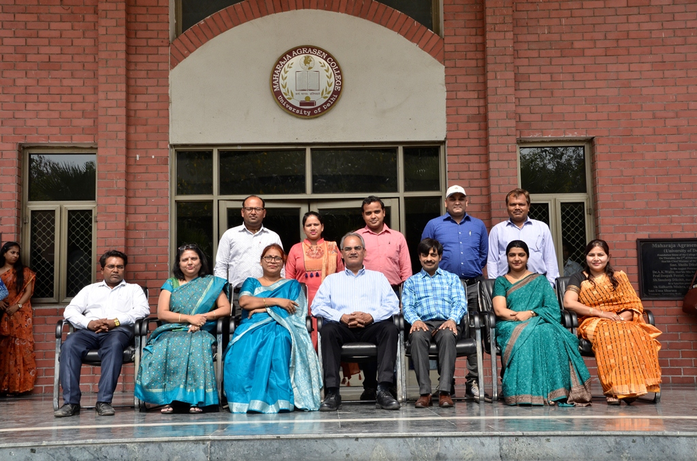

The Department of Computer Science has been an integral part of the Maharaja Agrasen College since its inception. The Department aims at inculcating the desire in the young and inquisitive minds to explore and expand their creative horizons and inspires them to be at the forefront of the innovations in the field of software development, programming, applications and testing. We at the Department of Computer Science go beyond providing regular guidance to the students and give them an opportunity to enhance their knowledge by organizing regular workshops, seminars and guest lectures by experts from various areas of Computer Technology and Industry who provide valuable insights from their knowledge and experience. We expect our students to be the trailblazers in their chosen area and set benchmarks in the industry with their excellence.
The Department of Computer Science offers its courses to B.Sc. (Physical Science), B.Sc. (Mathematical Science), B.A. (Programme) and Generic Papers to all Honours students of the college as an option. The CBCS syllabus of Computer Science includes papers like Database Management Systems, Computer Networks, Multimedia, Operating Systems, Computer Systems Architecture, Internet Technology and Information Security and Cyber Law, Software Engineering. It also offers courses which gives the students expertise in latest programming languages like C++, Java, Java Script, JDBC, Python, Visual Basic, HTML, SQL and Shell Programming and various multimedia software like Blender, Flash, Adobe and Macromedia.
Departmental Teachers are also part of the Delhi University Innovation Projects scheme and has two running projects. Teachers keep updating themselves by involving in research-related activities. The Departments keeps the students engaged in various curricular and co-curricular activities like technical events, hands-on workshops and educational trips. The Department of Computer Science boasts of three fully equipped computer labs with all weather air conditioning. The support staff includes lab assistants and technical assistants to cater to the requirements of the lab and students.
